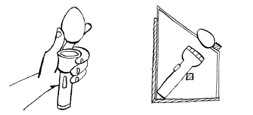
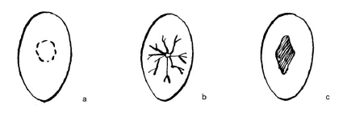
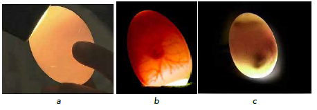

প্রোগ্রামড হ্যাচিংয়ের সংজ্ঞা এবং সুবিধা
প্রোগ্রামড হ্যাচিং হল এমন একটি পদ্ধতি যেখানে মুরগি একাধিক ডিম ফোটায় এবং একই বয়সের বাচ্চাগুলিকে একই বয়সের বাচ্চা হিসাবে লালন-পালন করা হয়। সংক্ষেপে, বিভিন্ন মুরগির অনেক ডিম ফোটায় মুরগিগুলিকে ইনকিউবেটর হিসেবে ব্যবহার করা হয়। প্রোগ্রামড হ্যাচিং হল একটি খামারে মুরগির সংখ্যা বৃদ্ধির একটি দ্রুত এবং সস্তা উপায়। এই প্রোগ্রামের মূল কথা হল স্থানীয় মুরগির একটি দল দ্বারা একই বয়সের বা বয়সের বৃহৎ সংখ্যক দিন বয়সী বাচ্চা ফোটায় ডিম ফোটায় সময় (সিঙ্ক্রোনাইজেশন)। এর সুবিধাগুলির মধ্যে রয়েছে:
- একই দিনে অনেক বাচ্চা ফোটানো হয় এবং তাই পাখিদের টিকা দেওয়া এবং পরিচালনা করা সহজ হয়।
- পাখিদের দল গঠন সহজ, যার ফলে দলবদ্ধভাবে খাওয়ানোও সহজ হয়।
- কৃষকরা আগে থেকেই পরিকল্পনা করতে পারেন কখন পাখি বাজারজাত করবেন (ভালো বাজারের জন্য উৎসবের মরশুমের সময় নির্ধারণ)।
- কোনও ইনকিউবেটরের প্রয়োজন নেই তাই এই উদ্ভাবনটি গ্রামীণ এলাকার জন্য উপযুক্ত।
- সাধারণ ইনকিউবেশন এবং মুরগির ছানা পালনের ক্ষেত্রে পাখিরা বছরে সাত বার পর্যন্ত বাচ্চা বের করতে পারে, যেখানে মুরগির দ্বারা দুই বা তিনবার বাচ্চা বের হয়।
- বাণিজ্যিক মুরগির ক্ষেত্রে যেমন হয়, কৃষকদের দূরবর্তী শহর থেকে মুরগির বাচ্চা পরিবহনের প্রয়োজন হয় না বলে কম খরচে বাচ্চা উৎপাদন করা হয়।
- প্রোগ্রাম করা হ্যাচিং পদ্ধতির মাধ্যমে যদি যত্ন সহকারে অনুশীলন করা হয়, তাহলে বছরে মূল স্টকের সংখ্যা দ্রুত তিনগুণ বৃদ্ধি করার সম্ভাবনা রয়েছে। অন্যদিকে, স্থানীয় মুরগির সাথে কুরোলারের মতো আরও উৎপাদনশীল মুরগির প্রজাতির ক্রসব্রিডিং করলে পরবর্তী বংশধরদের ডিমের সংখ্যা, আকার এবং শরীরের ওজন উন্নত হতে পারে। এটি দেশীয় জাতের ব্যবস্থাপনার সহজতা এবং রোগ প্রতিরোধ ক্ষমতার অতিরিক্ত সুবিধা প্রদান করে।
প্রোগ্রামেড হ্যাচিংয়ের জন্য পাল লালন-পালন করা
একই বয়সী মুরগি একসাথে লালন-পালন করা অথবা একই সময়ে ডিম পাড়া শুরু করা মুরগি দিয়ে প্রোগ্রামেড হ্যাচিং শুরু করা সহজ। অন্যথায়, প্রোগ্রামটি শুরু করা কখনও কখনও চ্যালেঞ্জিং হয়ে ওঠে। প্রোগ্রামটি শুরু করার জন্য, নিম্নলিখিত বিকল্পগুলির মধ্যে একটি বেছে নিতে পারেন:
- একই বয়সের (এক মাসের বেশি বয়সের পার্থক্য নয়) বাচ্চা বা পুলেট কিনুন। ডিম পাড়া শুরু না হওয়া পর্যন্ত একই ব্যবস্থাপনায় তাদের একসাথে লালন-পালন করুন।
- তোমার পাল থেকে এক মাসের বেশি বয়সের পার্থক্যের সমবয়সী পুলেট নির্বাচন করো এবং প্রোগ্রাম করা ডিম ফোটানোর জন্য বিশেষভাবে তাদের লালন-পালন করো। এগুলো অবশ্যই পছন্দসই বৈশিষ্ট্য সম্পন্ন পিতামাতার কাছ থেকে পুলেট হতে হবে।
- একই সময়ে বাচ্চা ছাড়ানোর সময় মুরগিগুলোকে দুধ ছাড়ান এবং নিজে নিজে বাচ্চা বড় করুন। প্রজনন কার্যক্রমকে উৎসাহিত করার জন্য এক সপ্তাহ পরে দুধ ছাড়ানো মুরগিগুলোর সাথে মোরগদের পরিচয় করিয়ে দিন।
এই সমস্ত বিকল্পের মধ্যে, আমরা এমন মুরগি রাখতে আগ্রহী যারা প্রায় একই সময়ে ডিম পাড়া শুরু করবে যাতে আমরা উপরে বর্ণিত প্রোগ্রামযুক্ত হ্যাচিংয়ের সুবিধাগুলি উপভোগ করতে পারি। সুতরাং, মুরগি অর্জনের জন্য সবচেয়ে গুরুত্বপূর্ণ সীমিত স্টক। প্রোগ্রাম শুরু করার জন্য প্রায় এক সপ্তাহ সময় হলেই কেবল মোরগ পরিচয় করানো যেতে পারে। ইনব্রিডিং রোধ করার জন্য একটি মোরগ ৬ মাসের বেশি জায়গায় থাকা উচিত নয়।
এই কর্মসূচির জন্য মজুদের যত্ন নেওয়া উচিত সম্পূরক খাদ্য, রোগ প্রতিরোধ, যেমন টিকাদান এবং অন্তঃপ্রজনন নিয়ন্ত্রণের মাধ্যমে।
মুরগির সমন্বয়, ডিম পাড়া এবং ইনকিউবেশন প্রক্রিয়া পরিচালনা
- এই প্রোগ্রামে মুরগিগুলিকে সিঙ্ক্রোনাইজ করার অর্থ হল তাদের প্রায় একই সময়ে ডিম পাড়া শুরু করা বা প্রায় একই সময়ে ডিম ফুটতে বাধ্য করা। বিভিন্ন বয়সের স্থানীয় পাখিদের ক্ষেত্রে সিঙ্ক্রোনাইজেশন চ্যালেঞ্জিং তবে একটি যুক্তিসঙ্গত স্তর অর্জন করা যেতে পারে।
- যদি আমরা একই বয়সী ছানা বা পুলেট দিয়ে শুরু করি, তাহলে ৩০% ছানা ডিম পাড়া শুরু না হওয়া পর্যন্ত অপেক্ষা করি এবং মুরগির বাচ্চা দেওয়া শুরু করি। অথবা মুরগির বাচ্চা ৫ মাস বয়সে ছানা দেওয়া হতে পারে। মনে রাখবেন, মুরগি না থাকা সত্ত্বেও ডিম পাড়া শুরু হতে পারে।
- অন্য বিকল্প হল, বিদ্যমান পাল থেকে মোরগগুলি সরিয়ে ফেলা এবং কমপক্ষে ৫টি মুরগি ডিম পাড়া শুরু করলে পুনরায় তাদের সাথে পরিচয় করিয়ে দেওয়া। এছাড়াও, মনে রাখবেন যে একটি মিলনের ফলে তিন দিনের জন্য উর্বর ডিম পাওয়া যেতে পারে।
- যদি আমাদের মুরগি তাদের ছানাদের সাথে ঘোরাফেরা করে, তাহলে আমাদের তাদের আলাদা করে ঘরের ভিতরে বাচ্চাগুলোকে বড় করতে হবে। তারপর আমরা দুধ ছাড়ানোর এক সপ্তাহ পর আলাদা করা মুরগিগুলোর সাথে মোরগ পরিচয় করিয়ে দিই।
- ডিমের উচ্চ উর্বরতা নিশ্চিত করার জন্য, প্রতি আটটি মুরগির জন্য একটি মোরগ রাখার পরামর্শ দেওয়া হয়।
- প্রতিটি মুরগিকে তার নিজস্ব পাড়ার বাসা দেওয়া হয়। মুরগির শনাক্তকরণ এবং উৎপাদন রেকর্ডের জন্য বাসাগুলিতে নম্বর দেওয়া উচিত। মুরগি যখন ডিমের উপর বসে থাকে তখন বাসাগুলি যেন প্রতিবেশীর ডিম দেখা না যায়।
- মুরগি যখন ডিম পাড়া শুরু করে, তখন প্রথম ডিমটি তুলে সেদ্ধ করে, পেন্সিল দিয়ে চিহ্নিত করে আবার ডিমের ভেতরে রেখে দেওয়া হয়। ডিম সেদ্ধ করলে নষ্ট হয়ে যাওয়ার এবং ডিম ফেটে অন্য ডিম দূষিত হওয়ার সম্ভাবনা কমে যায়।
- প্রতিদিন, ডিম পাড়া ডিমগুলি সরিয়ে ফেলা হয় এবং প্রতিটি ডিমের চওড়া দিকে পেন্সিল দিয়ে তোলার তারিখ চিহ্নিত করা হয়। ডিমগুলি প্রশস্ত প্রান্তগুলি উপরের দিকে মুখ করে পরিষ্কার ডিম ট্রেতে রাখা হয় এবং একটি নিরাপদ, শীতল এবং আর্দ্র জায়গায় সংরক্ষণ করা হয়, উদাহরণস্বরূপ ঘরের শীতলতম অংশের মেঝেতে একটি গর্তে একটি বাক্সে।
- ডিম ফোটার আগে তাজা হওয়া উচিত। ঠান্ডা জায়গায় সংরক্ষণ করলে ডিমের বয়স ৭ দিনের বেশি হওয়া উচিত নয়।
- সাধারণত, কিছুক্ষণ পর, একটি পাখি সিদ্ধ ডিমের উপর রাত্রিযাপন করে ডিম ফোটাতে শুরু করে। এই পাখিটিকে কোনও উর্বর ডিম দেওয়া হয় না বরং প্রায় দশ দিন বা অন্যরা ডিম ফোটা শুরু না করা পর্যন্ত ডিম ফোটার উপর (চিহ্নিত সিদ্ধ ডিম) বসে থাকে। প্রথম পাখিটি ডিম ফোটা শুরু করার প্রায় দশ দিন পরে, বেশিরভাগ অন্যান্য মুরগিও তাদের ডিম ফোটাতে বসতে শুরু করে।
- সব ইনকিউবেটিং মুরগিকে ১০ থেকে ১২টি করে উর্বর ডিম দেওয়া হয়, যেগুলো শেষ পাড়া মুরগি থেকে শুরু করে। মুরগির ডিম পাড়া মুরগিকে ইনকিউবেট করতে হয় না। তাই, এগুলো এলোমেলোভাবে রাখা যেতে পারে।
- সেরা ইনকিউবেশন ফলাফল পেতে, ইনকিউবেশনের জন্য নির্বাচিত ডিমগুলি মাঝারি আকারের এবং জাতের জন্য স্বাভাবিক আকৃতির হওয়া উচিত। মুরগিকে বসার জন্য ডিম দেওয়ার সময়, ডিম ফোটার জন্য নিম্নলিখিত ধরণের ডিম এড়িয়ে চলুন:
- খুব ছোট ডিম
- খুব গোলাকার/গোলাকার ডিম
- খুব বড় ডিম
- যে ডিমগুলি খুব বেশি তীক্ষ্ণ/তীক্ষ্ণ অথবা অস্বাভাবিক ডিমের খোসা (ফাটল সহ) থাকে। যদি খোসায় ফাটল থাকে, তাহলে ডিম থেকে আর্দ্রতা হ্রাস খুব বেশি হতে পারে এবং ভ্রূণ মারা যেতে পারে। ডিমে ব্যাকটেরিয়া প্রবেশের ঝুঁকিও থাকে, যার ফলে অস্বাস্থ্যকর বা মৃত ভ্রূণ হতে পারে।
- খুব নোংরা ডিম (যার উপর মল বা সার থাকে)।
- বাসা পাড়ার জন্য পরিষ্কার-পরিচ্ছন্নতা গুরুত্বপূর্ণ, সেইসাথে মুরগির জন্য খাবার এবং জল। মুরগির ডিম ফোটানোর ক্ষেত্রে বাহ্যিক পরজীবী নিয়ন্ত্রণও গুরুত্বপূর্ণ।
- ইনকিউবেশনের সময় আপনার সর্বদা পরীক্ষা করা উচিত যে কোন ডিম উর্বর এবং কোনটি অনুর্বর নয়। উর্বর ডিম খুব দ্রুত রক্তনালী তৈরি করে, যা এক সপ্তাহ ইনকিউবেশনের পরে টর্চের তীব্র আলোতে দেখা যেতে পারে।  আপনার হাত বা কাঠের বাক্স এবং একটি টর্চ ব্যবহার করে ঘরে তৈরি মোমবাতি   বন্ধ্যা ডিম (ক), উর্বর ডিম (খ) এবং মৃত ডিম সনাক্তকরণ
৭-১০ দিন ইনকিউবেশনের পর ডিমগুলো মোমবাতি দিয়ে জ্বালিয়ে বন্ধ্যা ডিম এবং মৃত ভ্রূণযুক্ত ডিমগুলো বাসা থেকে সরিয়ে ফেলা যেতে পারে। চিত্র ৫৮ দুটি সাধারণ মোমবাতি দেখায় এবং চিত্র ৫৯ দেখায় কিভাবে ৭ দিন বয়সে উর্বর ডিম, বন্ধ্যা ডিম এবং মৃত ভ্রূণযুক্ত ডিমগুলো শনাক্ত করা হয়। মোমবাতি দেওয়ার সময়, একটি উর্বর ডিমে দৃশ্যমান রক্তনালী এবং একটি কালো দাগ থাকে যা ভ্রূণ। ভ্রূণ কতটা শক্তিশালী তার উপর নির্ভর করে রক্তনালীগুলো কমবেশি বিকশিত হতে পারে। যদি ভ্রূণটি মৃত থাকে, তাহলে এটি ভ্রূণের চারপাশে রক্তের বলয় হিসেবে দেখা যায়। একটি বন্ধ্যা ডিমের একটি বর্ধিত বায়ু কোষ থাকে এবং কুসুম ডিমের মধ্যে স্পষ্ট অন্ধকার জায়গা তৈরি করে। বন্ধ্যা ডিম এবং মৃত ভ্রূণযুক্ত ডিমগুলো বাসা থেকে সরিয়ে ফেলা গুরুত্বপূর্ণ কারণ এগুলো পচে যাবে এবং ইনকিউবেশনের সময় তাজা ডিম ভেঙে নষ্ট করে দিতে পারে।
যখন আপনি চান যে পাখিরা বৃহস্পতিবারে বাচ্চা ফোটাক, তখন তাদের ঠিক তিন সপ্তাহ আগে বুধবার সন্ধ্যায় ডিম দেওয়া হয়। এই পদ্ধতিটি কাজ করে কারণ মুরগিরা তাদের ডিম ফোটানো বা ডিমে বসে থাকা দিনগুলির সংখ্যা গণনা করে না।
- মুরগি বাসা ছাড়ার আগে অন্ধকারে ছানাগুলো সরিয়ে ফেলতে হবে, অন্যথায়, এটি পরবর্তী ডিম ফোটাতে নাও পারে।
- ডিম ফোটানো ছানাগুলো বের করার পর, মুরগিগুলোকে ইচ্ছা করলে বসতে দেওয়ার জন্য নতুন করে উর্বর ডিম দেওয়া যেতে পারে।